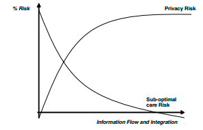

Figure 3. Privacy versus suboptimal care risk: Possible patient/consumer view
Therefore the hypothetical clinician’s opinion (Figure 1) may be shaped by the perspec-
tive that, on balance, the greatest risk our communities face is a whole range of sub-
optimal care, that at least in part is attributable to the poor flow and integration of health
information. Based on this hypothesis, better integrated health information leads to
better integrated healthcare, the desired outcome from an effective health knowledge
management system would be to shift the norm of the health outcomes curve towards
the optimal end of the curve minimising the degree of sub-optimal care
However while not disputing the desire to minimise sub-optimal care, a patient may
perceive the relative risks differently (Figure 3). It is currently, and likely to remain,
difficult to provide “evidence” based data on relative privacy versus sub-optimal care
risks to an individual or indeed populations, as there will be strong perceptual differences
as to what the scope of that evidence should be and how it should be weighed. However
we could assume the relative risk graphs are unlikely to be reflected by straight lines. The
relative risks are likely to be influenced by individual perception, respective roles, the
nature of the data, and to change over time. The frequency, imminence, likelihood, and
magnitude of risk would also need to be considered, as would the ability to identify,
evaluate, manage, and review risk.
In the absence of definitive data, and with the recognition that the perceived risk arising
from a privacy infringement has such a personal perceptual component, it is important
to highlight some of the views and perceptions with regard to this matter
It could be argued, that severe physical disability or death is unlikely except in the case
of a privacy infringement leading to severe psychological distress resulting in attempted
or completed suicide. However there are a number of counter arguments to this. These
suggest that what we do now even with good intention could have future potentially
unforeseen but not unforeseeable adverse impacts. These suggest that there is not only
the potential for sub-optimal care, but also for active discrimination if not persecution
and political or regime sanctioned killings.
Perceived risk of a privacy infringement may lead to a patient withholding information,
or delaying presentation to health services. This may result in delayed investigation and
treatment and potentially sub-optimal care including avoidable morbidity and death. This
morbidity may extend to others particularly in the case of infectious diseases, not least
partners and unborn children in the case of sexually transmitted diseases.
Current data integration, data mining, risk prediction, and genetic profiling developments
have the potential for great benefit for our communities. However there is also the risk
that without appropriate regulation, certain segments of the populations could be
identified at high health risk and become unemployable, uninsurable and unable to obtain
credit, a mortgage or appropriate affordable healthcare (Kennedy, 2004).
Insurers and employers are generally not innately bad. They are businesses charged with
making a profit (or minimising loss) by their shareholders, and can be expected to use
every legal means and loophole possible to identify and manage their risk particularly
if it gives them an advantage over a competitor.
However it can be argued that the potential unfettered ability of insurance companies
and health management organisations to be progressively able to segment or cut up
the market, and discard those least profitable should be a concern for every
community.
Unique health identification numbers can facilitate the process of data integration across
multiple electronic systems, and lead to better-integrated care. It can also be argued that
within the context of a large integrated electronic system they may decrease privacy or
security risk by minimising the amount of non secure activity around bringing a
disintegrated paper record together, such as multiple phone calls to other services
inquiring as to the availability of records, and the subsequent transfer of paper records
However, it can be argued that if there is an infringement of an integrated unique identifier
based electronic system, there is the opportunity for thousands of records to be
accessed, with unique identifiers facilitating access to a wide range of comprehensive
health information. An infringement could in theory be the result of a hacker gaining
unauthorised access to the health network. However, of likely greater risk is a health
service staff member, acting out of curiosity, malice or pecuniary gain, or having simply
been misled or talked into it by someone posing as a patient or clinician on the telephone.
This latter method of infringement has been highlighted by Anderson (1996). The risk
of staff access, facilitating a range of crimes including murder has also entered the
popular fictional literature (Gerritsen, 2001), also shaping community perceptions.
It could also be argued that significant parts of humanity’s past and present has been
dominated by war, invasion, totalitarian regimes, and state sanctioned terror, and even
those of us currently living in relatively benign environments are naïve to believe that
such horrors will not feature in our future. Such invading or totalitarian regimes have and
would use every means possible to control and terrorise the population, including health
data. The provision therefore of a national unique health identification number could
facilitate this process, including the singling out of specific subgroups for discrimina-
tion, persecution or killing (Black, 2001).
There are also general privacy infringement concerns, including health information
systems, being cross referenced, or matched with other government systems including
social services, benefits and police, and the use of data for unauthorised research or
commercial purposes
Are patient privacy concerns sometimes just a smokescreen for clinician privacy
concerns? Are clinicians sometimes just trying to minimize the transparency of a whole
range of issues from limitations of their skill and efficiency to fraudulent practice? It is
understandable why many clinicians would find these questions challenging if not
insulting. However in terms of exploring the challenges that might impact on the effective
implementation of health knowledge management systems, they are perspectives that
cannot be ignored, and following is a brief limited discussion of some of the potential
underlying issues.
Evidence Based Medicine (EBM) or the concept that treatment choices should be based
on, or backed by, the best evidence available, has unfortunately in many situations,
become perceived as an excuse for “evidence bound” medicine. That is the establishment
of rigid regimes, or marked limitation of treatment choices that stifle innovation or new
developments and do not recognise individual patient variation. This has particularly
become associated with the term “managed care”. Managed care is a concept that in its
pure form has some worth, as it promotes the idea of effective clinical care pathways and
efficient targeted integrated use of resources. However the form of “managed care”
espoused by profit focused health organisations, and insurance companies is perceived
as having little to do with effectively managing care in the patients interests, but
everything to do with managing costs and subsequently maximising profits.
Accordingly clinicians may be rightly concerned with respect to whether, Health
Information Management Systems that propose to support “evidence based medicine”
and “quality management” are not just Trojan Horses, implemented with purely financial
goals that will lead to a state of “evidence bound medicine” (Orr, 2000).
It can be argued that in a fee-for-service environment concerns for patient privacy may
be a smokescreen to prevent monitoring of over-servicing and over-investigation and
subsequent over-claiming. Unfortunately this argument might have some credence, but
hopefully it applies to only a small minority of clinicians.
The clinician population, just like the patient population, will have a spectrum of views
and needs and behaviours with regard to their own personal privacy. The view that those
who are doing nothing wrong have nothing to worry about may have some validity, but
it does not dismiss the fact that some of those who have done nothing wrong will worry,
or certainly will not enjoy or embrace their employing, funding or regulatory body’s
ability to closely monitor or control their behaviour.
Clinicians may rightly question a health information management system’s capacity for
“evidence building medicine”, the potential to support research and effectively improve
clinical processes from their perspective and to augment their clinical skill and profes-
sionalism.
Coiera and Clark (2003) have comprehensively described some of the parameters,
complexities, and potential solutions for the concept of “e-consent” with regard to the
handling of electronic patient information. It may be useful to focus on some of the
perceived potential limitations or challenges of the concept (or more specifically the
concept of so called “informed consent”) in practice, when it interacts with the complex
system of health and clinical care information flows and utilisation. As a context to this
discussion, a series of perspectives, and metaphors about how the current health system
(and particularly clinical practice) functions is presented.
Informed consent implies some form of formal risk benefit analysis; or at least that a
patient is freely consenting to a particular action having been appropriately informed of
the potential risks and benefits of such an action. In relation to an electronic Health
Information System, informed consent can be used to imply that a patient, based on
perceived privacy risk, should have the right to suppress certain information, or to
prevent certain caregivers from viewing specific information. Additionally, to protect
privacy, it can be argued the caregiver should be given no indication that information
has been suppressed or is deliberately being withheld from their view. One argument that
can be used for this is that patients have always withheld information from caregivers,
and caregivers have always been willing to make incomplete notes on patient’s request.
A caregiver utilises a Health Knowledge System with a view to making more effective or
optimal decisions about a patient’s care. A clinician may recognise that, just like a paper
record, the electronic record may not always be complete accurate and timely. However
is it acceptable for an employer to provide systems that can deliberately deceive or
mislead a clinician by suppressing information, while giving no indication that informa-
tion is being withheld?
Biopsychosocial Healthcare (Engel, 1977) should be related to Biopsychosocial Pattern
Recognition. Healthcare that seeks to address a patient’s illness or disease, not just as
biological pathology, but within a psychosocial context, needs to have an understanding
of that context. From an information system perspective, assistance with pathology
recognition and general treatment advice may be helpful, for example if a patient presents
with certain symptoms and signs, the clinician is provided with list of potential diagnoses
and general investigation and management advice.
However, for optimal biopsychosocial healthcare, it is important to know an individual’s
specific risk profile and psychosocial circumstances, their coping mechanisms and
supports and how they may have progressed and responded in the past, with the aim of
facilitating individualised chronic care and task management. Pattern recognition and
appropriate interventions are often related to subtle changes for that specific patient.
Longitudinal history and knowing not just how a patient is presenting now but how they
have presented and responded over time is one of the major benefits of a longstanding
relationship between a patient and a trusted clinician.
In an environment where patient and clinician relationships may be increasingly fragmen-
tary, with multiple short term interventions by multiple caregivers, a health knowledge
system should seek to act as an organisational glue and organisational memory, holding
together and integrating both the shared collective and longitudinal knowledge of a
patient and appropriately co-ordinated responses.
A Health Knowledge System should aim to bring together as soon as possible the
required “pieces” that will increase the “capacity to act” (Sveiby, 2001), or capacity to
C.A.R.E. (that is the capacity to deliver in a coordinated fashion the integral clinical,
administrative, research and educational functions of healthcare). Like a jigsaw, the more
pieces already in place, the quicker it is to start seeing the overall picture and what pieces
(areas) best to solve next. Indeed, in terms of biopsychosocial pattern recognition, a
clinician may sometimes think they are working on putting together the pieces to build
one picture, but get more pieces and realise they are actually working on another
Media reviews of adverse events or deaths using a “retrospectascope” often see simple
clarity where none was evident to clinicians involved at the time. Using the
“retrospectascope” often one can see all the pieces of the jigsaw at a single place and
point in time when in reality the pieces will have emerged from multiple sources over time.
In reality, a clinician often needs to solve the jigsaw, as if riding around it in a roller coaster
through a dark tunnel with only glimpses from different perspectives of not only the index
problem, but multiple problems for multiple patients they may be being asked to solve
at the same time.
A machine or computerised jigsaw, with increasing levels of intelligence, could bring
pieces together for you, sort and frame pieces into groups and provide decision support
telling you a piece is missing or a piece cannot go here as it does not fit with another (e.g.,
preventing medication errors). If you switch on the privacy mode of this “intelligent”
jigsaw should it place mittens on you, slowing the problem solving process or say “sorry
you cannot see that piece” or even withhold pieces without even telling you? There will
undoubtedly be situations where the withholding of specific information from specific
caregivers can be justified. However the concept of informed consent should at least seek
to convey an understanding of not just the perceived privacy risks and benefits of
information flowing or not flowing, but also the clinical risks and benefits.
However there are different perceptions or perspectives of what those risks and benefits
are, and these can differ for each disorder, patient, caregiver, and can vary over time. For
example information typically considered sensitive includes that related to infectious
and sexually transmitted diseases, alcohol, and drug and mental health history and
obstetric and gynaecological history (particularly in relation to induced abortion).
However some patients may consider, for example a family or personal history of
carcinoma as, or more, sensitive while one clinician suggested he would be more worried
about an insurance company (via their GP) checking his lipids. We also need to consider
the time and resource implications of information flow “informed consent” processes and
how realistic it is at the time of information collection to make decisions on all information
collected in terms of its current and future information flows; for example, that information
item A can go to Doctor A but not Doctor B or Nurse C, but item C can only be viewed
by Doctor D. In the common situation of resource limitation and prioritisation it can be
argued there may be a pragmatic need for “implied consent”, with the patient having to
actively indicate they want a particularly piece of information limited in its flow.
Similarly it can be argued that it is misleading to even attempt to utilise the concept of
informed consent to imply that a health service can truly offer a patient the option of
control over their information flows. There may be clinical, statutory, regulatory or
financial requirements that require a clinician or health service to pass certain information
or partial information to other bodies. A clinician or health service can do their best to
make a patient aware of the nature and purpose of the information they are collecting and
how it may be utilised, but it is misleading to imply that the patient has total, un-coerced
control over that information, for which they can freely offer or withdraw consent.